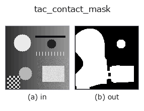

tactile op• Data kinds: image → region
• Call: fullseye.apply(img, "tac_contact_mask", a=0.5, b=0.5) (2-D model = एक image + दो scalar knobs a,b∈[0,1])

*Figure synthetic 128×128 input पर सच में चलाकर मिला output है। बाईं ओर input, दाईं ओर output। Point clouds ऊपर से देखे गए scatter के रूप में (brightness = z), 1-D series line के रूप में, volumes z दिशा में maximum-intensity projection के रूप में, videos बीच के frame के रूप में, complex images amplitude के रूप में, और जो return values चित्र नहीं बन सकते वे स्वयं values के रूप में दिखाए जाते हैं।*
Knob a को बदलकर (0.1 / 0.5 / 0.9, दूसरा knob default पर):
▸ tac_contact_mask: knob a को बदलने का figure (docs site)
Knob b को बदलकर (0.1 / 0.5 / 0.9, दूसरा knob default पर):
▸ tac_contact_mask: knob b को बदलने का figure (docs site)
दूसरी images पर भी (synthetic scene / photo / coins। ऊपर की row में inputs, नीचे की row में उनके outputs। Knobs default पर):
▸ tac_contact_mask: दूसरी images पर output (docs site)
*चौथा column colour (H,W,3) input है। यह op channels को पार किए बिना colour संभालता है (colour channel को तीसरे spatial axis की तरह convolve नहीं करता)।*
Pseudo-reference background subtraction से tactile frame का contact region: dev = |v - G_sigma(v)|, जहाँ sigma = max(2, min(H,W)/6) (low-frequency envelope बिना विकृति वाले reference frame की जगह काम करता है), thr = 0.005 + 0.145*a gray levels पर threshold किया जाता है, फिर binary opening और उसके बाद binary closing (3x3, 8-connected) के round(3*b) iterations से साफ़ किया जाता है। a = deviation threshold (संवेदनशीलता), b = morphological सफ़ाई की strength। इनपुट HxW का BINARY 0/1 float64 region लौटाता है; पूरी तरह समतल (constant) frame में हर जगह deviation शून्य होता है, इसलिए उससे EMPTY mask मिलता है।
खाली frame (मापा गया): एक समान brightness वाली image देने पर brightness चाहे जो हो, परिणाम खाली होता है (सभी pixels background 0)। पूरी सफ़ेद हो या पूरी काली, एक जैसा व्यवहार होता है; केवल brightness से कुछ detect नहीं होता।
• Sample data catalog (DL URL / license) — 2-D के लिए skimage.data (BSD/public) + synthetic, 3-D के लिए real data sources (Stanford/PDS आदि) के DL URL।
• Operators का स्रोत और संदर्भ — इस op family के मूल research/methods के स्रोत।
नीचे का program सच में चलता है, यह जाँचा गया है (figure वाला ही input)। Studio की help में यह block buttons बन जाता है, जिनसे इसे वहीं load करके चलाया जा सकता है।
tac_contact_mask 0.50 0.50
▸ यह pipeline load करें · Load करके चलाएँ
• poc_tacsim_elastic_membrane — py -3.11 examples/poc_tacsim_elastic_membrane.py
• sim2real_and_alife — py -3.11 examples/sim2real_and_alife.py
region को input के रूप में लेते हैं)identity · reg_erode · reg_dilate · reg_open · reg_close · fill_holes · select_largest · remove_small
tactile)tac_height_from_shading · tac_surface_normal · tac_pressure_proxy · tac_shear_field
*Provenance: ops.py — 2D operator registry. यह per-op note tools/opdocs.py md से अपने-आप generate होता है (हाथ से edit न करें)।*
© 2026 Kazufumi Furuse — Fullseye operator documentation. Licensed under Apache-2.0.